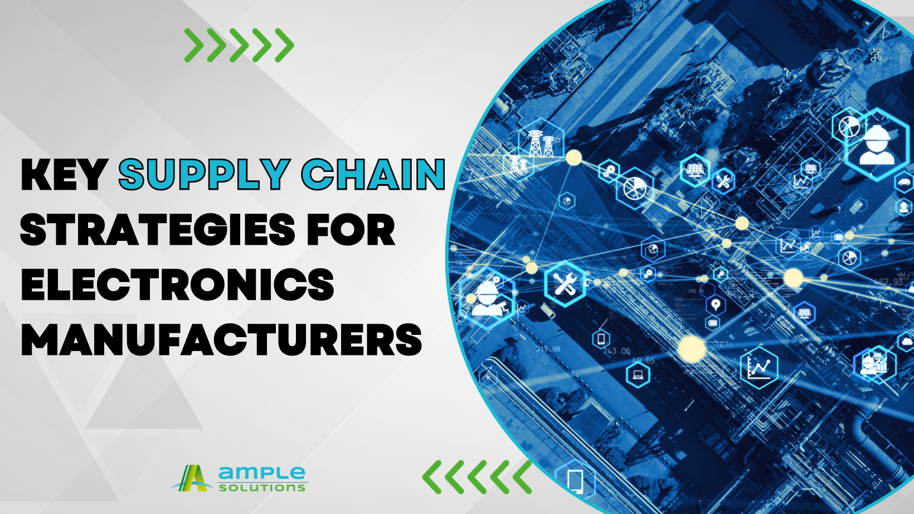
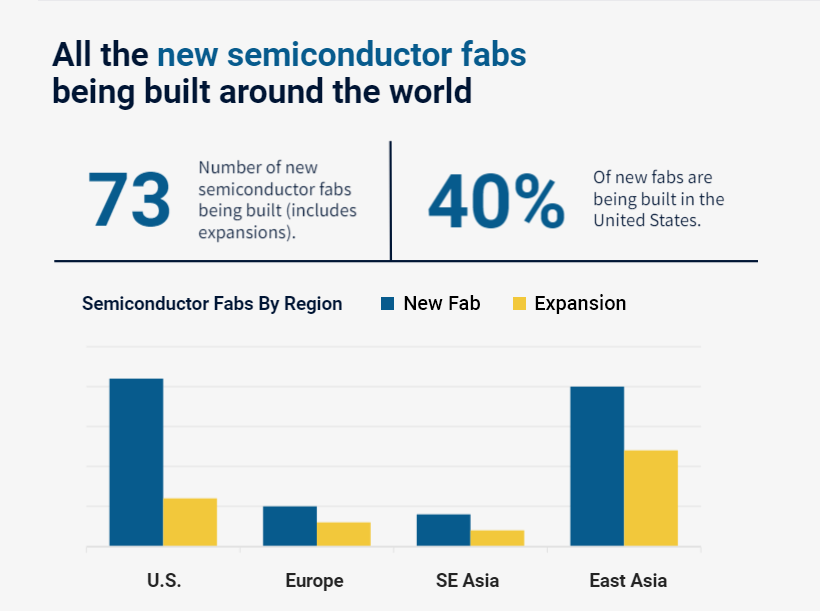

marketing@ample.sg
marketing@ample.sg 18823927828 13413422177
18823927828 13413422177


Key Supply Chain Strategies for Electronics ManufacturersMore than three years after the first wave of Covid-19 factory shutdowns, we have been witnessing an ease in chip shortages in major industries. Major semiconductor industry players are in a race to enhance their manufacturing capabilities to meet the market demand. Based on a recent report by Z2Data [1], there are at least 73 semiconductor fabs being built around the world now, but these facilities typically take one to two years to become operational.

Source: Key Statistics on New Semiconductor Fabs
Being Built Around the World, Z2Data
Furthermore, talent deficit may pose another problem on top of fab construction. Taiwan Semiconductor Manufacturing Company (TSMC), the world's largest contract semiconductor manufacturer, has encountered difficulties in finding a sufficient number of skilled workers, leading to a one-year delay in the opening of its first plant in the United States (U.S.), now scheduled for 2025. [2] This delay reflects a broader issue within the U.S. semiconductor industry — a significant workforce shortage, as highlighted in a recent report by the Semiconductor Industry Association (SIA). According to the SIA report, the semiconductor industry's workforce requirements are projected to increase by 33%, from approximately 345,000 jobs today to approximately 460,000 jobs by 2030. However, a staggering 58% of these projected new positions, equivalent to roughly 67,000 jobs, are at risk of remaining vacant based on current rates of degree completion. [3] This concerning trend implies that nearly 39% of chip factory technician roles may go unfilled in the coming years, underscoring the urgent need for initiatives to bridge this workforce gap.
This represents a substantial risk to the industry's capacity to meet escalating demand, adding another layer of complexity to an already intricate supply chain ecosystem, escalating the potential for instability. Consequently, it becomes imperative for electronics manufacturers to adopt proactive strategies, ensuring they are well-prepared to weather any potential disruptions and bolster their supply chain resilience.
Leveraging Data Analytics & AI:
Data analytics and artificial intelligence (AI) play a pivotal role in navigating supply chain uncertainties. As Parv Tandon, Managing Director and Global AI & Analytics Services Leader at Deloitte, aptly stated, "By crunching through the massive amounts of data being generated by today’s supply chains, AI can predict a range of unexpected events, such as weather conditions, transportation bottlenecks, and labor strikes, helping to anticipate problems and reroute shipments around them." [4] Moreover, embracing emerging transformative technologies like AI, IoT, digital twins, and blockchain can substantially enhance supply chain visibility, traceability, proactive decision-making, and risk management. For instance, 3D printing, an innovative technology, is gradually becoming a viable alternative for specialised and low-volume component manufacturing. This revolutionary approach enables localised, on-demand production, potentially reshaping component manufacturing dynamics in the electronics industry. Such technological advancements contribute to bolstering the resilience and adaptability of supply chains in the face of unpredictable disruptions.
Implementation of the China+1 Strategy:
Recent years have seen multinational companies adopt the China+1 strategy, designed to diversify their manufacturing and supply chain footprint. This approach mitigates over-dependence on China as the world's primary manufacturing hub. Countries currently considered as promising “Plus 1” locations include Vietnam, India, Bangladesh, or Mexico. By identifying alternative production locations and expanding the supplier base to encompass at least one additional country, companies not only manage risks associated with local production disruptions but also gain entry into new markets. Furthermore, this strategic move reduces vulnerability to price fluctuations arising from Chinese trade policies or currency fluctuations.
A Shift in Just-in-Time Approaches:
While the just-in-time supply chain and procurement methodology is celebrated for its efficiency, it is not immune to crises like the COVID-19 pandemic. Lockdowns and global disruptions threw a wrench into the gears of just-in-time methods, highlighting the need for adaptability in supply chain strategies. Instilling a culture of continuous improvement and adaptability is now a cornerstone of supply chain resilience. Regular assessments and optimisations of processes, technologies, and manufacturing procedures reveal opportunities for improvement and bolster the overall robustness of the supply chain.
The Power of Supplier Relationships in Times of Crisis:
To combat ongoing disruptions and material shortages, the power of robust relationships cannot be overstated. According to a 2022 study by Ernst and Young (EY), a substantial 62% of industrial companies reported significant alterations to their supplier networks within the past two years. [5] Among these companies, those who proactively expanded their supplier base and diversified their sourcing countries emerged as more resilient in the face of disruptions. While enhancing resilience is paramount, it's worth noting that such strategic diversification efforts can often entail additional costs. To mitigate these challenges, many organisations are turning to innovative solutions such as automation and temporary price adjustments.
In this context, the role of independent distributors remains vital. During the pandemic, when franchised or authorised distributors faced constraints in supplying essential components, independent distributors played a pivotal role in ensuring the continuity of manufacturing operations for many. Drawing upon their expertise and decades of strategic relationship-building, independent distributors are well-equipped to identify alternative sourcing channels. These may include regional authorised or franchised distribution, direct manufacturer partnerships, or tapping into surplus and excess inventories. Furthermore, independent distributors boast an expansive worldwide supplier network, strategically tapping into resources across diverse regions, enabling them to offer elusive components at highly competitive prices. As a result, independent distributors continue to be a valuable resource for navigating supply disruptions and maintaining the flow of critical components.
As we navigate these complexities, it becomes evident that thriving in the electronics industry requires not only innovative strategies but also collaborative partnerships and a commitment to continuous improvement. Together, these elements empower organisations to not only weather the storms but also flourish in an ever-evolving landscape.
References:
[1] 9 Key Statistics on New Semiconductor Fabs Being Built Around the World, Z2Data, 2023
[2] TSMC delays $40bn chip fab in Arizona due to skilled worker shortage, DatacenterDynamics, 2023
[3] Chipping Away: Assessing And Addressing The Labor Market Gap Facing The U.S. Semiconductor Industry, SIA, 2023
[4] How using analytics and AI can help companies manage the semiconductor supply chain, CNBC, 2022
[5] Why Supplier Diversification is a Solution, Supply and Demand Chain Executive, 2023


 Back to list
Back to list